ProjectFlow
Comprehensive User & PMO Manual
The complete guide for Project Management Office teams, project managers, and team members using the ProjectFlow enterprise AI-powered Project & Portfolio Management platform.
Version: 1.0
Date: July 2026
Application: http://localhost:3000
Target Audience: PMO Team, Project Managers, Team Members
Table of Contents
Part A: End-User Guide
- 1. Getting Started
- 1.1 Landing Page Overview
- 1.2 Logging In
- 1.3 Signing Up
- 1.4 Password Recovery
- 2. Dashboard & Navigation
- 2.1 My Projects Dashboard
- 2.2 Left Sidebar Navigation
- 2.3 Top-Level Menu Structure
- 3. Project-Level Navigation
- 3.1 Project Header Tabs
- 3.2 Entering a Project
- 4. My Profile & Settings
- 4.1 User Profile Management
- 4.2 Theme Settings
- 5. Notifications
Part B: PMO & Admin Guide
- 6. Initial Estimation Module
- 6.1 Ballpark Estimation
- 7. Project Details
- 8. Resources Management
- 8.1 Adding Resources
- 8.2 Resource Availability & Dates
- 9. Releases, Stages & Milestones
- 9.1 Release Timeline
- 9.2 Managing Releases
- 9.3 Managing Stages
- 9.4 Managing Milestones
- 10. Development Dashboard
- 10.1 Key Metrics
- 10.2 Sprint Burndown Chart
- 10.3 Release Burnup Chart
- 11. Testing Module
- 11.1 Test Dashboard
- 11.2 Test Backlog
- 12. Governance & RAID
- 12.1 RAID Dashboard
- 12.2 Risks
- 12.3 Assumptions
- 12.4 Issues
- 12.5 Dependencies
- 13. Holidays & Leave Management
- 13.1 Holiday Calendar
- 13.2 Leave Calendar
- 14. PMO Module
- 14.1 Project Documents
- 14.2 TnM Billing
- 14.3 TnM Payment Milestones
- 14.4 Business Continuity
- 14.5 PMO Approval Sign-offs
- 15. Project Simulation
- 15.1 Running Simulations
- 15.2 Test Date Controls
- 16. Project Management
- 16.1 Project Trash
- 16.2 Project Settings
Appendices
- A. Quick Reference Guide
- A.1 Navigation Quick Reference
- A.2 Keyboard Shortcuts
- A.3 Common Workflows
- B. Glossary
Part A: End-User Guide
This section covers everything end-users need to know to navigate and use the ProjectFlow application effectively. It includes account management, dashboard navigation, project access, and user settings.
1. Getting Started
1.1 Landing Page Overview
When you first access ProjectFlow at http://localhost:3000, you will see the landing page. This is the public-facing entry point of the application.
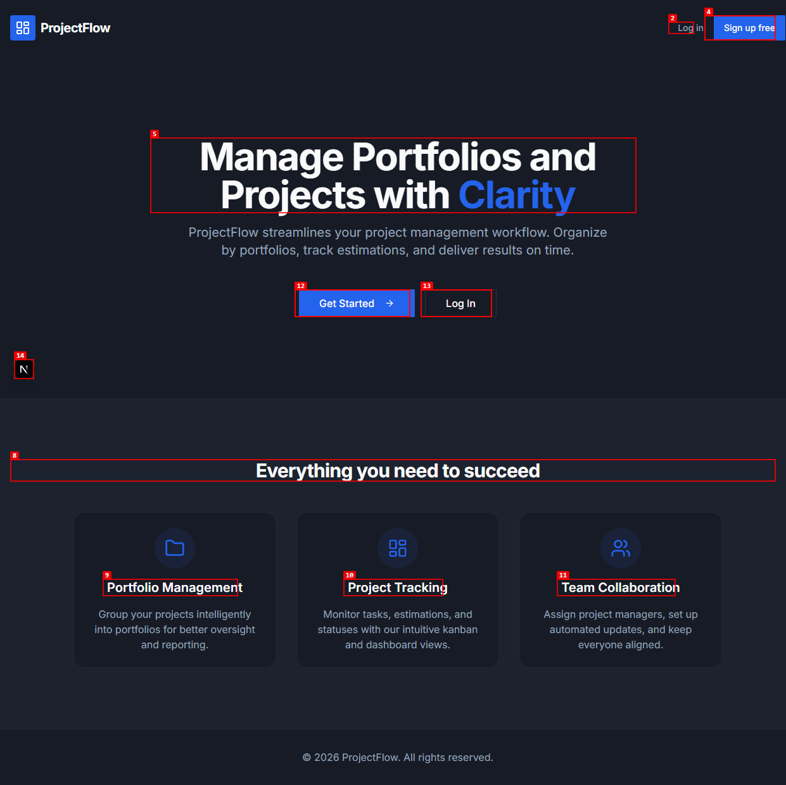
Figure 1: ProjectFlow Landing Page. Shows the main heading "Manage Portfolios and Projects with Clarity" with "Get Started" and "Log In" buttons, plus three feature sections: Portfolio Management, Project Tracking, and Team Collaboration.
Landing Page Elements:
- Logo: Top-left corner displays the ProjectFlow logo (blue wave icon with text)
- Navigation Links: "Log in" and "Sign up free" links in the top-right corner
- Main Heading: "Manage Portfolios and Projects with Clarity"
- Get Started Button: Prominent blue button to begin onboarding
- Log In Button: Direct access to the login page
- Feature Sections: Three highlighted areas:
- Portfolio Management
- Project Tracking
- Team Collaboration
Tip: If you already have an account, click "Log In" to access your dashboard. New users can click "Sign up free" to create an account.
1.2 Logging In
To access your ProjectFlow workspace, you need to log in with your registered credentials.
Step-by-Step Login Process:
Step 1: Navigate to http://localhost:3000 and click the "Log In" button on the landing page, or go directly to the login page.
Step 2: You will see the login page with:
- ProjectFlow logo at the top
- Heading: "Welcome back!"
- Subheading: "Sign in to your account"
- Email input field
- Password input field
- "Forgot password?" link
- "Log In" button (blue)
- "Don't have an account? Sign up free" link
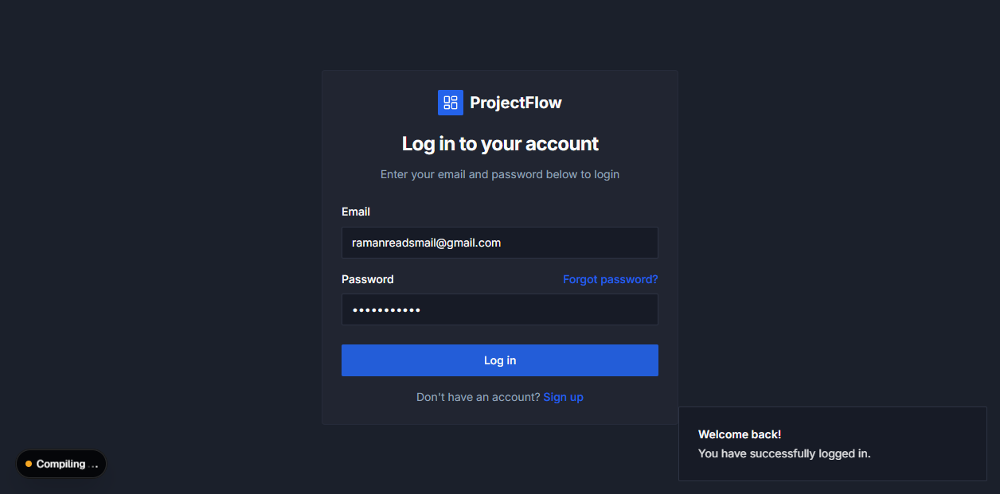
Figure 2: Login Page. Dark-themed login form with email and password fields, "Forgot password?" link, and "Log In" button.
Step 3: Enter your registered email address in the Email field.
Step 4: Enter your password in the Password field. Your password will be masked with dots for security.
Step 5: Click the "Log In" button. If your credentials are valid, you will be redirected to the My Projects Dashboard.
Warning: If you enter incorrect credentials, you will see an error message. Please verify your email and password, or click "Forgot password?" to reset.
Login Troubleshooting:
| Issue | Solution |
|---|
| Invalid email/password | Double-check your credentials. Ensure caps lock is off. |
| Forgot password | Click "Forgot password?" link and follow the reset process. |
| Account not found | You may need to sign up first. Click "Sign up free". |
1.3 Signing Up
New users can create an account by clicking "Sign up free" on the landing page or the login page.
Registration Process:
Step 1: Click "Sign up free" on the landing page or login page.
Step 2: On the sign-up page, you will see:
- ProjectFlow logo
- Heading: "Create your account"
- Input fields for: Name, Email, Password
- "Sign Up" button
- "Already have an account? Log in" link
Step 3: Fill in all required fields:
- Name: Your full name
- Email: Your work email address
- Password: Create a strong password (minimum 8 characters recommended)
Step 4: Click "Sign Up". If successful, you will be redirected to the dashboard.
Note: Password requirements may include minimum length, uppercase letters, numbers, and special characters. Follow the on-screen guidelines.
1.4 Password Recovery
If you have forgotten your password, you can reset it through the login page.
Step 1: On the login page, click "Forgot password?" link below the password field.
Step 2: Enter your registered email address on the password reset page.
Step 3: Check your email inbox for a password reset link. Click the link and follow the instructions to set a new password.
2. Dashboard & Navigation
2.1 My Projects Dashboard
After logging in, you will be taken to the My Projects Dashboard. This is your central hub for viewing all projects you are associated with.
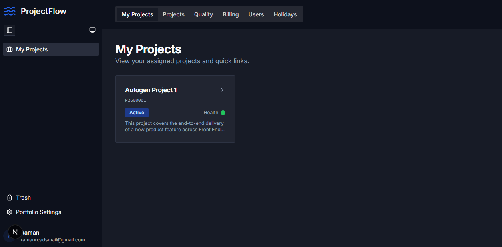
Figure 3: My Projects Dashboard. Shows the "Welcome back!" notification, "My Projects" heading, project cards with status indicators, and the left sidebar with navigation options.
Dashboard Elements:
- Notification Banner: "Welcome back!" appears at the top after login
- Page Heading: "My Projects" with a description of your project portfolio
- Project Cards: Each project is displayed as a card showing:
- Project name (e.g., "Autogen Project 1")
- Project ID (e.g., "P2600001")
- Project status indicator
- Quick stats (stories, features, tasks, bugs)
- Clicking a project card opens that project's detail page
2.2 Left Sidebar Navigation
The left sidebar provides access to all major sections of the application. Its contents change contextually depending on whether you are on the dashboard or inside a project.
Dashboard Sidebar Items:
- My Projects: Returns to the projects dashboard (home icon)
- Project Resources: Access resource management for current project
- Project Releases: Access release management
- Project Simulation: Widget with percentage dropdown and "Run" button
- Test Date: Time and date pickers for simulation controls
- Project Trash: Access deleted projects
- Project Settings: Configure project settings
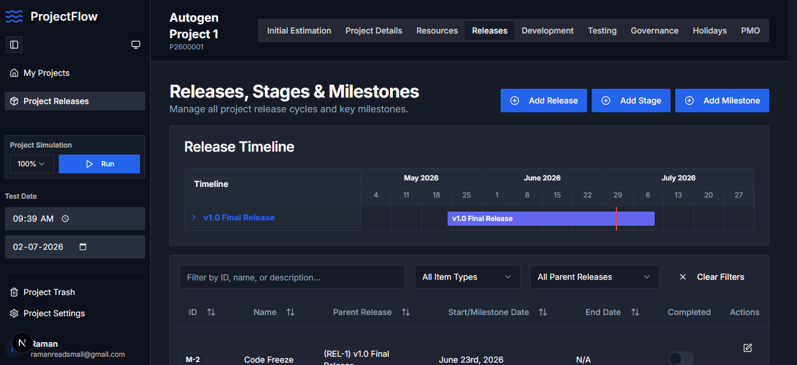
Figure 4: Left Sidebar. Shows navigation menu items, Project Simulation widget with percentage dropdown and Run button, Test Date controls (time and date pickers), and user profile section at the bottom.
2.3 Top-Level Menu Structure
The application has a hierarchical menu structure:
| Level | Location | Items |
|---|
| Level 1 | Left Sidebar | My Projects, Documents, TnM Billing, TnM Payment Milestones, Business Continuity |
| Level 2 | Top Header Tabs | Initial Estimation, Project Details, Resources, Releases, Development, Testing, Governance, Holidays, PMO |
| Level 3 | Sub-navigation | Context-specific items within each tab (e.g., Ballpark, RAID Dashboard, Test Dashboard) |
3. Project-Level Navigation
3.1 Project Header Tabs
Inside any project, you will see a horizontal tab bar at the top of the page. These tabs provide access to all project management modules.
Available Project Tabs:
| Tab Name | Module | Purpose |
|---|
| Initial Estimation | Ballpark Estimation | Define project summary and impacted systems for initial cost/effort estimates |
| Project Details | Project Configuration | Configure project settings, milestones, and parameters |
| Resources | Resource Management | Manage users assigned to this project, their roles, capabilities, and availability |
| Releases | Release Management | Manage release cycles, stages, milestones, and timelines |
| Development | Development Dashboard | Overview of development progress, sprint burndown, release burnup charts |
| Testing | Test Management | Test execution status, test cases, bugs, and test plans |
| Governance | RAID Management | Risks, Assumptions, Issues, and Dependencies tracking |
| Holidays | Holiday/Leave Management | Holiday calendar and leave management for the project |
| PMO | PMO Management | Project documents, billing, payment milestones, and business continuity |
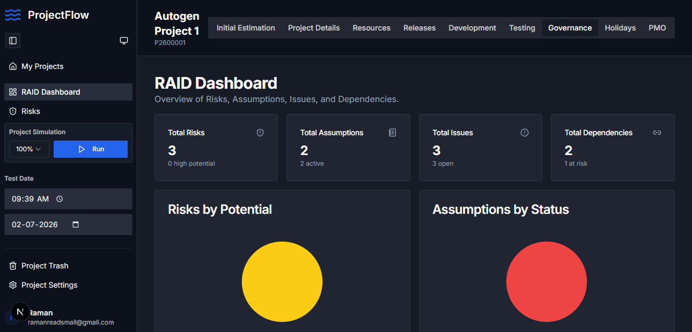
Figure 5: Project Header Tabs. Shows all 9 project-level tabs: Initial Estimation, Project Details, Resources, Releases, Development, Testing, Governance, Holidays, and PMO. The active tab is highlighted.
3.2 Entering a Project
Step 1: From the My Projects Dashboard, locate the project card you want to access.
Step 2: Click on the project card (anywhere on the card). This will navigate to the project's default view (typically the Development Dashboard).
Step 3: Use the top header tabs to switch between different project modules.
Step 4: Use the left sidebar to access sub-sections within each module (e.g., RAID Dashboard, Risks, Assumptions under Governance).
4. My Profile & Settings
4.1 User Profile Management
Your user profile is accessible from the bottom of the left sidebar. It displays your avatar, name, and email address.
Profile Information Displayed:
- Avatar: Initials-based avatar (e.g., "R" for Raman)
- Name: Your display name
- Email: Your registered email address
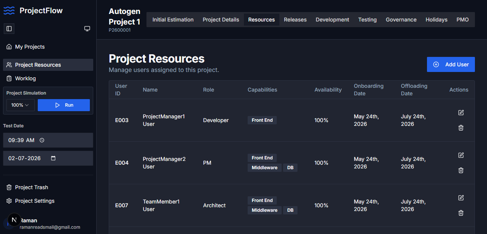
Figure 6: User Profile Section. Bottom-left corner of the sidebar showing user avatar with initial, name, and email address.
Note: To update your profile information (name, email, password), click on your profile section to access profile settings. Contact your PMO administrator if you need to change your email address.
4.2 Theme Settings
ProjectFlow supports theme switching to suit your preference.
Step 1: Look for the "Toggle theme" button in the left sidebar (light/dark mode icon).
Step 2: Click the button to switch between Light and Dark themes.
Tip: The theme preference is saved per user. Your selected theme will persist across sessions.
5. Notifications
ProjectFlow includes a notification system to keep you informed of important events and updates.
Accessing Notifications:
Step 1: Look for the notification bell icon in the top-right area of the page.
Step 2: Click the bell icon to open the Notifications panel.
Step 3: You can also use the keyboard shortcut F8 to quickly open notifications.
Notification Types:
- Project Updates: Changes to project status, milestones, or deadlines
- Task Assignments: New tasks assigned to you
- Bug Reports: New bugs filed or status changes
- Resource Changes: Updates to team composition
- PMO Approvals: Status of PMO sign-off requests
Important: Regularly check your notifications to stay informed about project changes and ensure you do not miss critical updates.
Part B: PMO & Admin Guide
This section is designed for Project Management Office (PMO) teams, project managers, and administrators. It covers project setup, resource management, release planning, governance, billing, and all administrative functions within ProjectFlow.
6. Initial Estimation Module
The Initial Estimation module is the starting point for any new project. It captures the project summary and impacted systems to generate an initial cost and effort estimate.
6.1 Ballpark Estimation
Ballpark Estimation allows you to define the project summary and impacted systems for an initial estimate. This is typically the first step in project creation.
Navigating to Ballpark Estimation:
Step 1: Open a project from the My Projects Dashboard.
Step 2: Click on the "Initial Estimation" tab in the top header.
Step 3: In the left sidebar, click on "Ballpark" to access the Ballpark Estimation view.
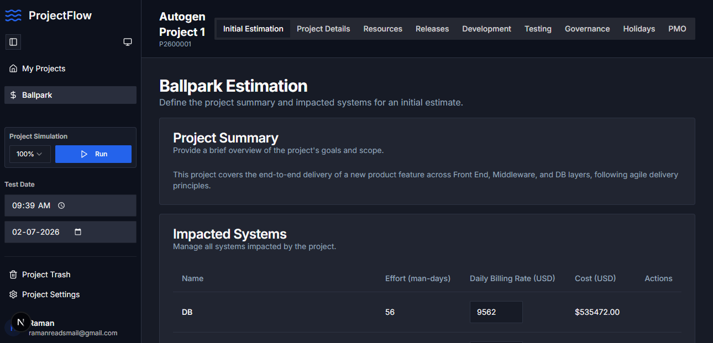
Figure 7: Ballpark Estimation Page. Shows the Project Summary section with project description and the Impacted Systems table with Name, Effort (man-days), Daily Billing Rate (USD), Cost (USD), and Actions columns.
Ballpark Estimation Sections:
6.1.1 Project Summary
The Project Summary section captures the high-level description of the project.
- Title: "Project Summary"
- Description: "Provide a brief overview of the project's goals and scope."
- Input: Text area for project description
Example: "This project covers the end-to-end delivery of a new product feature across Front End, Middleware, and DB layers, following agile delivery principles."
6.1.2 Impacted Systems
The Impacted Systems table lists all systems affected by the project, along with effort estimates and costs.
| Column | Description | Example |
|---|
| Name | Name of the impacted system | DB, Front End, Middleware |
| Effort | Estimated effort in man-days | 56 |
| Daily Billing Rate (USD) | Cost per day for this system | $9,562 |
| Cost (USD) | Total cost (Effort x Rate) | $535,472.00 |
| Actions | Edit/Delete options | Pencil icon, Trash icon |
Managing Impacted Systems:
Step 1: Click the "Add" button or equivalent to add a new impacted system.
Step 2: Enter the system name, effort (man-days), and daily billing rate.
Step 3: The total cost is calculated automatically (Effort x Daily Rate).
Step 4: Click the pencil icon to edit a system entry, or the trash icon to delete it.
Important: Accurate estimation of effort and billing rates is critical for project budgeting. Review with your PMO team before finalizing.
7. Project Details
The Project Details tab provides configuration options for the project, including project parameters, milestones, and other settings.
Accessing Project Details:
Step 1: Open a project from the My Projects Dashboard.
Step 2: Click on the "Project Details" tab in the top header.
Project Details typically includes:
- Project name and ID
- Project description and scope
- Milestone definitions
- Project timeline settings
- Custom parameters
PMO Note: Project Details configuration should be reviewed by the PMO team before project execution begins. Changes to project parameters may affect downstream estimates and timelines.
8. Resources Management
The Resources module is used to manage all users assigned to a project, including their roles, capabilities, availability, and onboarding/offloading dates.
8.1 Adding Resources
Step 1: Open a project and click on the "Resources" tab in the top header.
Step 2: In the left sidebar, click on "Project Resources" (highlighted/active).
Step 3: Click the "Add User" button in the top-right corner of the main content area.
Figure 9: Project Resources Page. Shows the "Add User" button, resource table with columns for User ID, Name, Role, Capabilities, Availability, Onboarding Date, Offloading Date, and Actions. Three sample resources are displayed: ProjectManager1 (Developer), ProjectManager2 (PM), and TeamMember1 (Architect).
Resource Table Columns:
| Column | Description | Example |
|---|
| User ID | Unique identifier for the resource | E003, E004, E007 |
| Name | Full name of the user | ProjectManager1 User |
| Role | Project role | Developer, PM, Architect |
| Capabilities | Technical capabilities (displayed as badges) | Front End, Middleware, DB |
| Availability | Percentage of time available for this project | 100% |
| Onboarding Date | Date the user joins the project | May 24th, 2026 |
| Offloading Date | Date the user leaves the project | July 24th, 2026 |
| Actions | Edit and delete options | Pencil icon, Trash icon |
8.2 Resource Availability & Dates
When adding or editing a resource, you can configure:
- Role: Select from available roles (Developer, PM, Architect, etc.)
- Capabilities: Select technical capabilities (Front End, Middleware, DB, etc.)
- Availability: Set percentage of time available (0-100%)
- Onboarding Date: When the resource starts on the project
- Offloading Date: When the resource will be removed from the project
PMO Guideline: Ensure resource availability is accurately set to avoid over-allocation. Resources with less than 100% availability will have their work distributed proportionally.
9. Releases, Stages & Milestones
The Releases module manages all project release cycles, stages, milestones, and their associated timelines.
9.1 Release Timeline
The Release Timeline provides a Gantt-style visual representation of release durations across the project timeline.
Figure 10: Releases Page. Shows the Release Timeline chart spanning May-July 2026 with a Gantt-style bar for "v1.0 Final Release", the "Add Release", "Add Stage", and "Add Milestone" action buttons, and a filter bar with search and dropdown filters.
Release Timeline Elements:
- Timeline Chart: Gantt-style visualization spanning project months
- Release Bars: Colored bars representing release durations
- Current Date Indicator: Red vertical line showing today's date
- Release Links: Clickable release names (e.g., "v1.0 Final Release")
9.2 Managing Releases
Step 1: Click on the "Releases" tab in the top header.
Step 2: Click the "Add Release" button.
Step 3: Fill in the release details:
- Release name (e.g., "v1.0 Final Release")
- Start date
- End date
- Description
Step 4: Save the release. It will appear on the Release Timeline.
9.3 Managing Stages
Step 1: Click the "Add Stage" button.
Step 2: Associate the stage with a parent release.
Step 3: Define stage dates and details.
9.4 Managing Milestones
Step 1: Click the "Add Milestone" button.
Step 2: Associate the milestone with a parent release.
Step 3: Define milestone date and details.
Releases Data Table Columns:
| Column | Description |
|---|
| ID | Unique identifier (e.g., M-2, REL-1) |
| Name | Name of the release/stage/milestone |
| Parent Release | Parent release association |
| Start/Milestone Date | Start date or milestone date |
| End Date | End date (may be N/A for milestones) |
| Completed | Toggle switch for completion status |
| Actions | Edit (pencil icon) |
Filter Options: Use the filter bar below the timeline to narrow down by ID, name, description, item type, or parent release. Click "Clear Filters" to reset.
10. Development Dashboard
The Development Dashboard provides an overview of the project's development progress, including key metrics and charts.
10.1 Key Metrics
The dashboard displays four key metric cards at the top:
| Metric | Description | Example Value |
|---|
| Total Stories | Total user stories in the project | 10 (100% complete) |
| Feature Changes | Number of feature changes | 2 (100% complete, 8h Total) |
| Tasks | Total tasks assigned | 32 (100% complete) |
| Bugs | Total bugs identified | 47 (91% complete) |
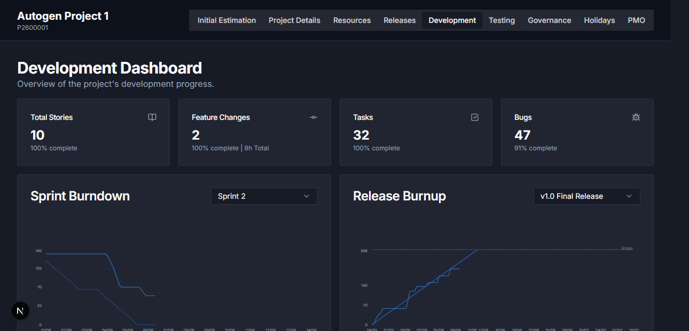
Figure 11: Development Dashboard. Shows four key metric cards (Total Stories, Feature Changes, Tasks, Bugs) and two charts: Sprint Burndown (left) and Release Burnup (right).
10.2 Sprint Burndown Chart
The Sprint Burndown chart shows the progress of work within a sprint.
Chart Elements:
- Sprint Dropdown: Select which sprint to view (e.g., "Sprint 2")
- Solid Blue Line: Actual progress (work remaining over time)
- Dotted Blue Line: Ideal/planned trajectory
- Y-Axis: Work units (stories, points, or hours)
- X-Axis: Days in the sprint
Interpretation: If the solid line is below the dotted line, the sprint is ahead of schedule. If above, it is behind schedule.
10.3 Release Burnup Chart
The Release Burnup chart shows cumulative work completed versus total scope for a release.
Chart Elements:
- Release Dropdown: Select which release to view (e.g., "v1.0 Final Release")
- Solid Blue Line: Completed work (trending upward)
- Dotted Line: Total scope
- Y-Axis: Work units
- X-Axis: Days
Interpretation: The gap between the solid and dotted lines represents remaining work. A narrowing gap indicates progress toward release completion.
11. Testing Module
The Testing module manages all testing activities including test cases, test plans, bug tracking, and test execution status.
11.1 Test Dashboard
The Test Dashboard provides an overview of testing status and issues.
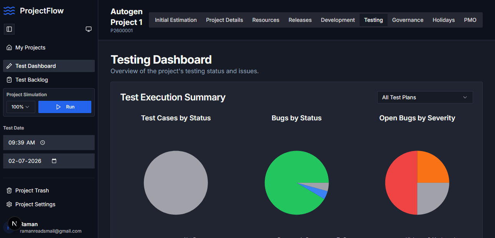
Figure 12: Testing Dashboard. Shows the Test Execution Summary with three pie charts: Test Cases by Status, Bugs by Status, and Open Bugs by Severity. Also shows the "All Test Plans" filter dropdown.
Test Dashboard Sections:
| Chart | Purpose | Segments |
|---|
| Test Cases by Status | Distribution of test cases by execution status | Passed, Failed, In Progress, Not Executed |
| Bugs by Status | Distribution of bugs by current status | Open, In Progress, Fixed, Closed |
| Open Bugs by Severity | Distribution of open bugs by severity level | Critical (Red), High (Orange), Medium (Yellow), Low (Blue) |
Accessing Test Dashboard:
Step 1: Click on the "Testing" tab in the top header.
Step 2: In the left sidebar, click on "Test Dashboard" (highlighted/active).
11.2 Test Backlog
The Test Backlog contains all test cases that need to be executed.
Step 1: In the left sidebar under Testing, click on "Test Backlog".
Step 2: Review the list of test cases, their status, and assign them to testers.
PMO Note: Regularly review the Test Backlog to ensure all critical test cases are assigned and executed before release.
12. Governance & RAID
The Governance module manages Risks, Assumptions, Issues, and Dependencies (RAID) -- critical elements of project governance.
12.1 RAID Dashboard
The RAID Dashboard provides an overview of all RAID elements with summary cards and visual charts.
Figure 13: RAID Dashboard. Shows four summary cards (Total Risks: 3, Total Assumptions: 2, Total Issues: 3, Total Dependencies: 2) and two visual charts: Risks by Potential (yellow circle) and Assumptions by Status (red circle).
RAID Summary Cards:
| Card | Count | Detail | Icon |
|---|
| Total Risks | 3 | 0 high potential | Shield |
| Total Assumptions | 2 | 2 active | Document/List |
| Total Issues | 3 | 3 open | Clock/Warning |
| Total Dependencies | 2 | 1 at risk | Link/Chain |
Accessing RAID Dashboard:
Step 1: Click on the "Governance" tab in the top header.
Step 2: In the left sidebar, click on "RAID Dashboard".
12.2 Risks
The Risks section allows you to identify, track, and mitigate project risks.
Step 1: In the left sidebar under Governance, click on "Risks".
Step 2: Click "Add Risk" to create a new risk entry.
Step 3: Fill in risk details:
- Risk description
- Potential level (Low, Medium, High, Critical)
- Owner
- Mitigation strategy
- Status
12.3 Assumptions
The Assumptions section tracks all project assumptions and their validation status.
Step 1: In the left sidebar under Governance, click on "Assumptions".
Step 2: Click "Add Assumption" to create a new entry.
Step 3: Fill in assumption details:
- Assumption description
- Status (Active, Validated, Invalidated)
- Owner
- Validation date
12.4 Issues
The Issues section tracks all open and resolved project issues.
Step 1: In the left sidebar under Governance, click on "Issues".
Step 2: Click "Add Issue" to create a new entry.
Step 3: Fill in issue details:
- Issue description
- Severity
- Owner
- Status (Open, In Progress, Resolved, Closed)
- Resolution date
12.5 Dependencies
The Dependencies section tracks external dependencies between projects, teams, or systems.
Step 1: In the left sidebar under Governance, click on "Dependencies".
Step 2: Click "Add Dependency" to create a new entry.
Step 3: Fill in dependency details:
- Dependency description
- Source (project/team)
- Target (project/team)
- Status (Active, At Risk, Resolved)
- Due date
13. Holidays & Leave Management
The Holidays module manages project-specific holiday calendars and team leave tracking.
13.1 Holiday Calendar
The Holiday Calendar allows you to manage weekly off-days and yearly holidays for the project.
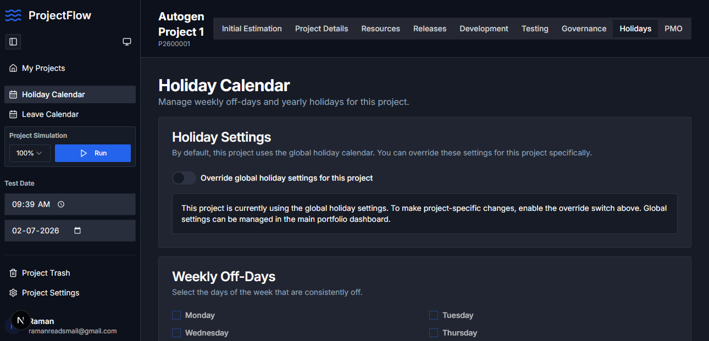
Figure 14: Holiday Calendar Page. Shows Holiday Settings section with "Override global holiday settings" toggle, and Weekly Off-Days section with checkboxes for days of the week.
Holiday Calendar Sections:
13.1.1 Holiday Settings
- Toggle: "Override global holiday settings for this project"
- Information Box: Indicates whether the project is using global or project-specific settings
Step 1: Click on the "Holidays" tab in the top header.
Step 2: In the left sidebar, click on "Holiday Calendar".
Step 3: To override global settings, toggle "Override global holiday settings for this project" to ON.
Step 4: Configure project-specific holidays (enabled only when override is ON).
13.1.2 Weekly Off-Days
- Checkboxes for each day of the week (Monday through Sunday)
- Selected days are treated as consistent off-days for the project
13.2 Leave Calendar
The Leave Calendar tracks individual team member leave requests and approvals.
Step 1: In the left sidebar under Holidays, click on "Leave Calendar".
Step 2: View the leave calendar showing team member leave dates.
PMO Note: Regularly review the Leave Calendar to ensure adequate team coverage. Schedule critical activities around known leave dates.
14. PMO Module
The PMO (Project Management Office) module provides document management, billing tracking, payment milestones, and business continuity planning.
14.1 Project Documents
The Project Documents section manages all important project documents and links.
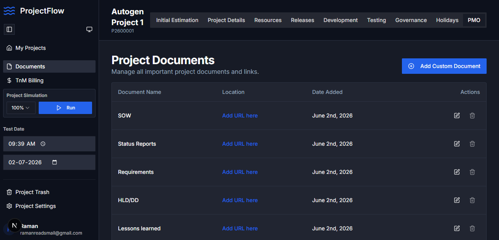
Figure 15: Project Documents Page. Shows the "Add Custom Document" button, and a table with Document Name, Location, Date Added, and Actions columns. Documents include SOW, Status Reports, Requirements, HLD/DD, Lessons learned, BCP, GIT, UI/UX Designs, Closure, and QA Approval.
Standard Project Documents:
| Document Name | Description | Required for |
|---|
| SOW | Statement of Work | Permit to Build sign-off |
| Status Reports | Regular project status updates | PMO review |
| Requirements | Business and technical requirements | Development planning |
| HLD/DD | High-Level Design / Detailed Design documents | Development approval |
| Lessons learned | Lessons from previous projects | Continuous improvement |
| BCP | Business Continuity Plan | Risk management |
| GIT | Repository access and configuration | Development setup |
| UI/UX Designs | Design mockups and specifications | Front-end development |
| Closure | Project closure documents | Project completion |
| QA Approval | Quality Assurance sign-off | Permit to Deploy sign-off |
Managing Documents:
Step 1: Click on the "PMO" tab in the top header.
Step 2: In the left sidebar, click on "Documents".
Step 3: To add a custom document, click "Add Custom Document" button.
Step 4: To link a URL, click the "Add URL here" link in the Location column for any document.
Step 5: To edit, click the pencil icon. To delete, click the trash icon.
14.2 TnM Billing
TnM (Time and Material) Billing tracks billable hours and costs for the project.
Step 1: In the left sidebar, click on "TnM Billing".
Step 2: Review billing entries, including:
- Billing period
- Resource allocation
- Hours worked
- Billable amounts
14.3 TnM Payment Milestones
TnM Payment Milestones tracks payment stages linked to project deliverables.
Step 1: In the left sidebar, click on "TnM Payment Milestones".
Step 2: Review payment milestones, their status, and associated deliverables.
14.4 Business Continuity
Business Continuity management ensures the project can continue despite disruptions.
Step 1: In the left sidebar, click on "Business Continuity".
Step 2: Review and update business continuity plans, including:
- Risk mitigation strategies
- Contingency plans
- Recovery procedures
- Key personnel assignments
14.5 PMO Approval Sign-offs
PMO Approval Sign-offs manages critical build and deployment milestones. Only PMO, Senior Management, or Administrators can sign off.
Figure 16: PMO Approval Sign-offs. Shows two approval checkboxes: "Permit to Build" (requires SOW link) and "Permit to Deploy" (requires QA Approval link). Both show "Pending" status with indicator icons.
PMO Sign-off Requirements:
| Approval | Purpose | Requirement | Status |
|---|
| Permit to Build | Authorizes development to begin | Valid SOW link in documents list | Pending (SOW Link Missing) |
| Permit to Deploy | Authorizes deployment to production | Valid QA Approval link in documents list | Pending (QA Sign-off Missing) |
Important: Both PMO approvals must be obtained before corresponding activities can begin. Ensure all prerequisite documents are linked before requesting sign-offs.
15. Project Simulation
The Project Simulation feature allows PMO teams to run simulations to predict project outcomes based on current parameters.
15.1 Running Simulations
Simulations use the project's current configuration (resources, effort estimates, timelines) to model project outcomes.
Accessing Simulation:
Step 1: Open any project. The Project Simulation widget is always visible in the left sidebar.
Step 2: Set the percentage using the dropdown menu (default: 100%).
Step 3: Click the blue "Run" button (with play icon) to execute the simulation.
Figure 17: Project Simulation Widget. Located in the left sidebar, showing a percentage dropdown (set to 100%) and a blue "Run" button with a play icon.
Simulation Parameters:
- Percentage: Controls the simulation intensity/scenario (0-100%)
- Test Date: The date context for the simulation (see below)
- Resources: Uses currently assigned resources and their availability
- Effort Estimates: Uses impacted systems and effort data from Ballpark Estimation
15.2 Test Date Controls
The Test Date controls set the temporal context for simulations.
Test Date Elements:
| Control | Format | Example | Purpose |
|---|
| Time | HH:MM AM/PM | 09:39 AM | Time of day for simulation context |
| Date | YYYY-MM-DD | 2026-07-02 | Date context for simulation |
Step 1: Click the clock icon next to the time field to open the time picker.
Step 2: Click the calendar icon next to the date field to open the date picker.
Step 3: Select the desired time and date.
Step 4: Click "Run" to execute the simulation with the selected parameters.
PMO Tip: Use the Test Date controls to simulate project status at different points in time. This helps in forecasting and planning.
16. Project Management
Project Management features include Project Trash (for deleted projects) and Project Settings (for project configuration).
16.1 Project Trash
The Project Trash contains deleted projects that can be restored or permanently removed.
Step 1: In the left sidebar, click on "Project Trash" (trash can icon).
Step 2: Review the list of deleted projects.
Step 3: To restore a project, click the restore button. To permanently delete, click the permanent delete button.
Warning: Permanently deleted projects cannot be recovered. Exercise caution when using permanent delete.
16.2 Project Settings
Project Settings allows configuration of project-specific parameters.
Step 1: In the left sidebar, click on "Project Settings" (gear icon).
Step 2: Configure project settings including:
- Project name and description
- Project status
- Notification preferences
- Access control settings
- Integration settings
PMO Note: Changes to project settings may affect downstream modules. Review the impact before making changes.
Appendix A: Quick Reference Guide
A.1 Navigation Quick Reference
| Goal | Navigation Path |
|---|
| View all projects | Left Sidebar -> My Projects |
| View a project | Dashboard -> Click project card |
| Ballpark Estimation | Project -> Initial Estimation tab -> Ballpark (sidebar) |
| Resource Management | Project -> Resources tab -> Project Resources (sidebar) |
| Release Management | Project -> Releases tab |
| Development Dashboard | Project -> Development tab |
| Test Dashboard | Project -> Testing tab -> Test Dashboard (sidebar) |
| RAID Dashboard | Project -> Governance tab -> RAID Dashboard (sidebar) |
| Holiday Calendar | Project -> Holidays tab -> Holiday Calendar (sidebar) |
| Project Documents | Project -> PMO tab -> Documents (sidebar) |
| TnM Billing | Project -> PMO tab -> TnM Billing (sidebar) |
| Project Settings | Left Sidebar -> Project Settings (gear icon) |
| Notifications | Top-right bell icon or press F8 |
A.2 Keyboard Shortcuts
| Shortcut | Action |
|---|
| F8 | Open Notifications panel |
A.3 Common Workflows
A.3.1 Creating a New Project
Step 1: Log in to ProjectFlow.
Step 2: Click "Get Started" or navigate to the project creation flow.
Step 3: Fill in project details (name, description, timeline).
Step 4: Configure Initial Estimation (Ballpark) with impacted systems.
Step 5: Assign resources in the Resources module.
Step 6: Set up releases and milestones in the Releases module.
Step 7: Link required documents in the PMO module.
Step 8: Request PMO approvals (Permit to Build, Permit to Deploy).
A.3.2 Adding a Resource to a Project
Step 1: Open the project.
Step 2: Click Resources tab -> Project Resources (sidebar).
Step 3: Click "Add User" button.
Step 4: Enter user details (name, role, capabilities, availability, dates).
Step 5: Save the resource.
A.3.3 Requesting PMO Approval
Step 1: Ensure all prerequisite documents are linked in PMO -> Documents.
Step 2: For Permit to Build: Ensure SOW link is present.
Step 3: For Permit to Deploy: Ensure QA Approval link is present.
Step 4: Request sign-off from PMO/Senior Management.
Step 5: Status updates will appear in the PMO Approval Sign-offs section.
Appendix B: Glossary
| Term | Definition |
|---|
| ProjectFlow | Enterprise AI-powered Project & Portfolio Management platform |
| PMO | Project Management Office -- team responsible for governance and standards |
| RAID | Risks, Assumptions, Issues, and Dependencies -- governance tracking elements |
| SOW | Statement of Work -- formal document defining project scope and deliverables |
| TnM | Time and Material -- billing model based on hours worked |
| HLD | High-Level Design -- architectural design document |
| DD | Detailed Design -- detailed technical design document |
| BCP | Business Continuity Plan -- plan for maintaining operations during disruptions |
| Permit to Build | PMO approval authorizing development to begin |
| Permit to Deploy | PMO approval authorizing deployment to production |
| Ballpark Estimation | Initial cost/effort estimate based on project summary and impacted systems |
| Sprint Burndown | Chart showing work remaining in a sprint over time |
| Release Burnup | Chart showing cumulative work completed vs. total scope for a release |
| Front End | Client-side application layer (UI/UX) |
| Middleware | Server-side application layer (business logic) |
| DB | Database layer (data storage and management) |